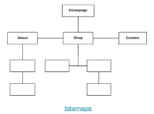
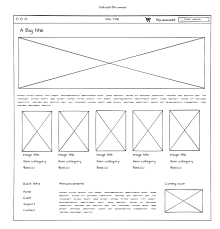
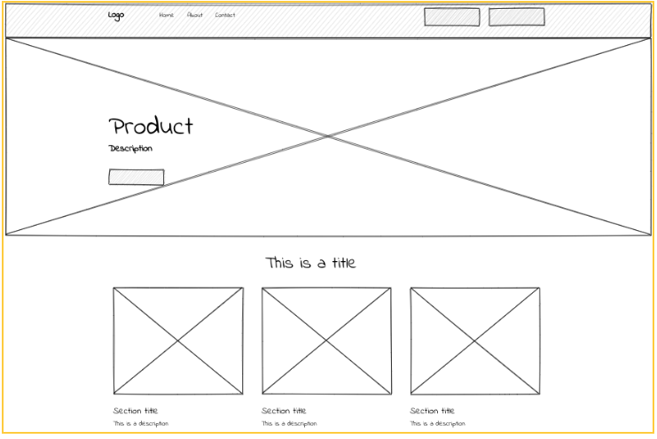
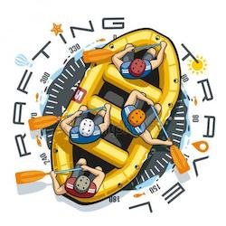

Site Name
White Water Rafting
Site Purpose
To promote thrilling white water rafting experiences and allow users to book adventures online while learning more about our team and safety measures.
Target Audience
- Outdoor adventure seekers
- Families looking for safe fun
- Corporate groups wanting team-building
Scenarios
- How do I book a rafting trip?
- What safety measures are in place?
- How experienced are the guides?
Style Guide
Color Scheme
- Primary Color: #1e6091 (Dark Blue)
- Secondary Color: #168aad (Light Blue)
- Accent Color: #f6bd60 (Orange)
Typography
- Headings Font: Montserrat, sans-serif
- Body Font: Open Sans, sans-serif
Site Map

Wireframes
Home Page Wireframe
This wireframe shows the layout for the homepage including a hero image, navigation bar, and basic call-to-action content.

About Page Wireframe
The about page includes a side-by-side layout with an image and text describing the company, plus navigation and footer.

Logo Wireframe
This is a conceptual sketch of what the final logo might look like. It outlines the font style, icon, and layout idea.
